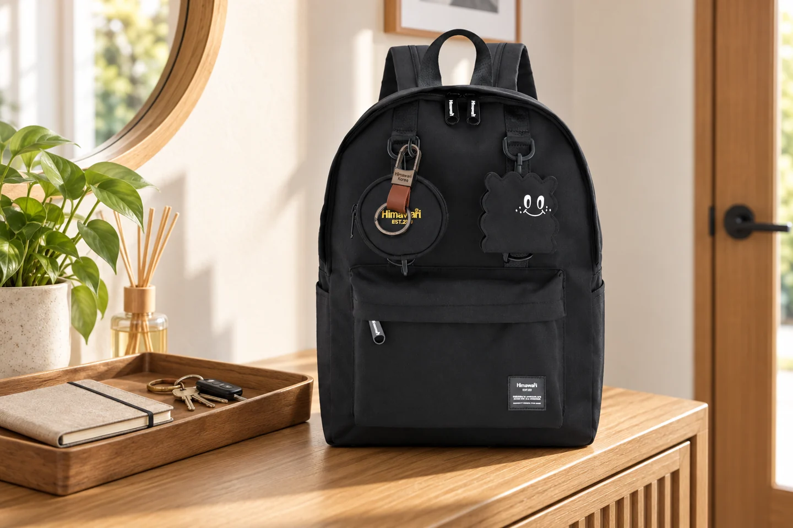

귀가한 백팩에서 오늘의 짐과 내일의 짐 나누기

집에 돌아온 백팩에는 오늘 사용한 물건과 내일도 쓸 물건이 함께 들어 있습니다. 현관에 그대로 두면 다음날 무엇을 빼고 채워야 하는지 다시 읽어야 합니다. 귀가 직후에는 짐을 완벽하게 재정리하기보다 먼저 꺼낼 묶음을 정해볼 수 있습니다. 사용한 용기와 젖은 물건, 충전할 기기처럼 지금 가방 밖에서 할 일이 있는 것부터 나누어봅니다.
정리할 자리는 실제 집의 동선에 맞춰 고릅니다. 현관에서 바로 물건을 펼칠 수 없다면 가방을 둘 정해진 자리로 옮긴 뒤 시작해도 됩니다. 가족이 지나는 길이나 문을 여는 공간을 막지 않도록 봅니다. 가방을 두는 위치와 꺼낸 물건이 갈 위치가 모두 정해져 있어야 정리 중 새 물건 더미가 생기지 않습니다.
꺼낸 물건에 다음 할 일 붙이기
오늘 사용한 도시락 용기나 개인 소품은 가방에서 꺼내 각 제품의 관리 안내에 맞춰 정리합니다. 포장지와 필요한 영수증도 구분합니다. 모두 같은 임시 주머니에 모아두면 내일 다시 골라야 할 수 있습니다. 지금 처리할 것과 기록으로 남길 것을 나누어두면 가방 속에 계속 쌓이는 항목을 알 수 있습니다.
젖은 우산이나 물기가 있는 물건은 현재 상태를 보고 다른 짐과 나눕니다. 관리와 건조 방법은 해당 제품의 안내를 따릅니다. 가방 안에서 꺼냈지만 그대로 다른 깨끗한 물건 위에 놓으면 정리할 위치가 다시 섞입니다. 임시 운반 주머니를 사용했다면 그 주머니도 함께 살펴보고 다음 사용 전에 필요한 정리를 합니다.
충전할 기기를 꺼낼 때는 선과 작은 부품의 위치도 봅니다. 내일 다시 가방에 들어가야 한다면 가방의 빈자리와 연결해 기억할 수 있습니다. 지금 사용할 기기와 다음날 가져갈 기기가 같다면 언제 되담을지 정해봅니다. 충전을 시작했다는 사실만으로 출발 준비가 끝난 것은 아니므로 아직 밖에 있는 항목을 남겨둘 수 있습니다.
귀가 후 가방을 살펴볼 제품 자료로 Himawari No.0422를 함께 소개합니다. 어떤 가방을 쓰든 먼저 꺼낼 묶음을 정한 다음 내일 남길 물건을 봅니다. 하루 동안 임시로 넣었던 소품이 원래 위치를 가리고 있는지도 살펴보세요. 오늘 쓰지 않은 파우치가 계속 남아 있다면 다음 일정에서 필요할지 판단할 자료가 됩니다.

내일도 쓸 것과 아직 채울 것
지갑과 열쇠처럼 반복해서 쓰는 물건은 자신이 익숙한 위치로 돌려놓습니다. 모두 가방에 남겨도 되는지 집에서 쓰는 방식과 다음 일정에 맞춰 정합니다. 다른 가방으로 바꾸는 날이라면 오늘 가방에 두는 것과 내일 가방으로 옮기는 것을 나눕니다. 위치를 바꾸었을 때만 알아볼 표시나 메모를 남기는 방식도 가능합니다.
다음날 필요한 자료는 시간표나 실제 일정을 보고 준비합니다. 평소 출근 짐과 다른 물건이 필요한 날이면 그 항목을 먼저 적습니다. 아직 준비되지 않은 것은 가방에 넣었다고 생각하지 않고 채울 목록으로 남깁니다. 세탁 중인 수건이나 충전 중인 기기처럼 지금은 넣을 수 없는 것을 구분하면 아침에 무엇을 가져와야 하는지 보입니다.
가방에 남길 물건은 실제로 넣고 꺼낼 순서를 봅니다. 아침에 먼저 확인할 승차 정보나 서류가 깊이 들어가 있으면 배치를 바꿀 수 있습니다. 무거운 물건의 위치나 여밈은 실제 짐을 놓고 살펴봅니다. 모양을 채우기 위해 필요 없는 물건을 남기기보다 필요한 묶음이 자연스럽게 닫히고 돌아갈 자리가 있는지를 기준으로 정합니다.
가방이 쉴 자리도 하나
가방을 보관할 곳은 바닥이 안정적으로 받쳐지고 주변 물건에 눌리지 않는지 봅니다. 끈이 바닥이나 통로로 늘어지는지 확인합니다. 손잡이를 오래 매다는 보관이 적절한지는 실제 제품의 안내를 확인하고 임의로 하중을 정하지 않습니다. 잠깐 옮길 때 잡는 위치와 밤새 두는 방법은 각각 선택할 항목입니다.
보관 위치가 정해지면 그 주변에 자꾸 내려놓는 개인 물건도 살펴볼 수 있습니다. 열쇠가 가방 옆에 있는데 가방 안에 있다고 기억하는 일이 있는지 생각합니다. 가방에 남길 것과 공통 보관 자리에 둘 것을 분명하게 나누어보세요. 매일 같은 위치를 써도 그날 사용한 물건이 돌아왔는지는 실제로 봐야 합니다.
시간이 부족한 날에는 지금 꺼내야 하는 묶음부터 처리하고 다음 준비를 나중에 이어갈 수 있습니다. 모든 칸을 한 번에 비워야 한다는 규칙으로 만들 필요는 없습니다. 다만 아직 남은 정리가 무엇인지 알 수 있어야 합니다. 가방 밖에 있는 기기와 사용한 주머니를 표시해두면 다음 동작이 막연해지지 않습니다.
여유 있는 날에는 모든 칸을 열어 한 번 비워봅니다. 반복해서 남았던 영수증과 쓰지 않은 도구가 어떤 자리를 차지했는지 볼 수 있습니다. 가방 상태에 필요한 정리는 제품의 관리 방법을 확인하고 진행합니다. 다시 넣을 물건을 고를 때는 빈 공간에 이전 물건을 전부 돌려놓기보다 다음 일정에 필요한 묶음부터 선택합니다.
아침에는 아직 채울 항목과 밖에 두었던 물건부터 확인합니다. 가방을 닫고 열쇠와 첫 사용 물건의 위치를 알아본 뒤 출발합니다. 귀가 정리에서 남긴 표시가 모두 해결되었는지 살펴보세요. 현관의 가방 자리는 짐을 잠시 내려놓는 곳이면서 오늘의 사용을 마치고 다음날 준비를 이어가는 기준이 될 수 있습니다.